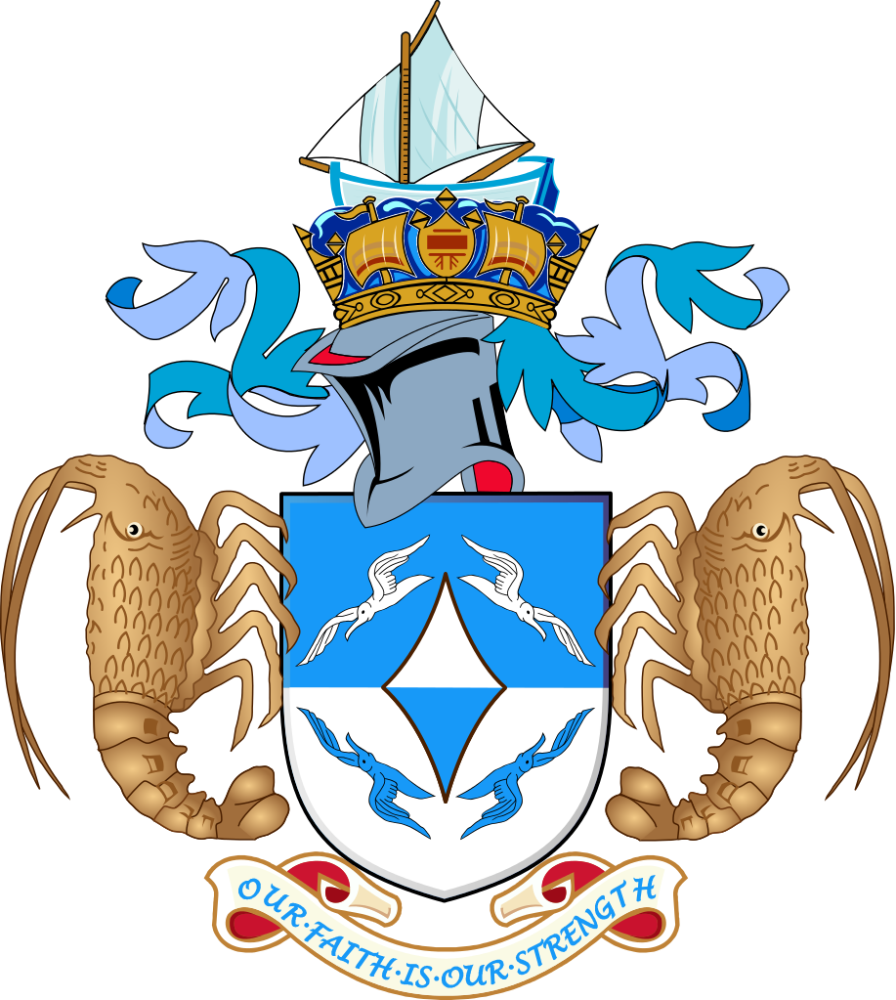
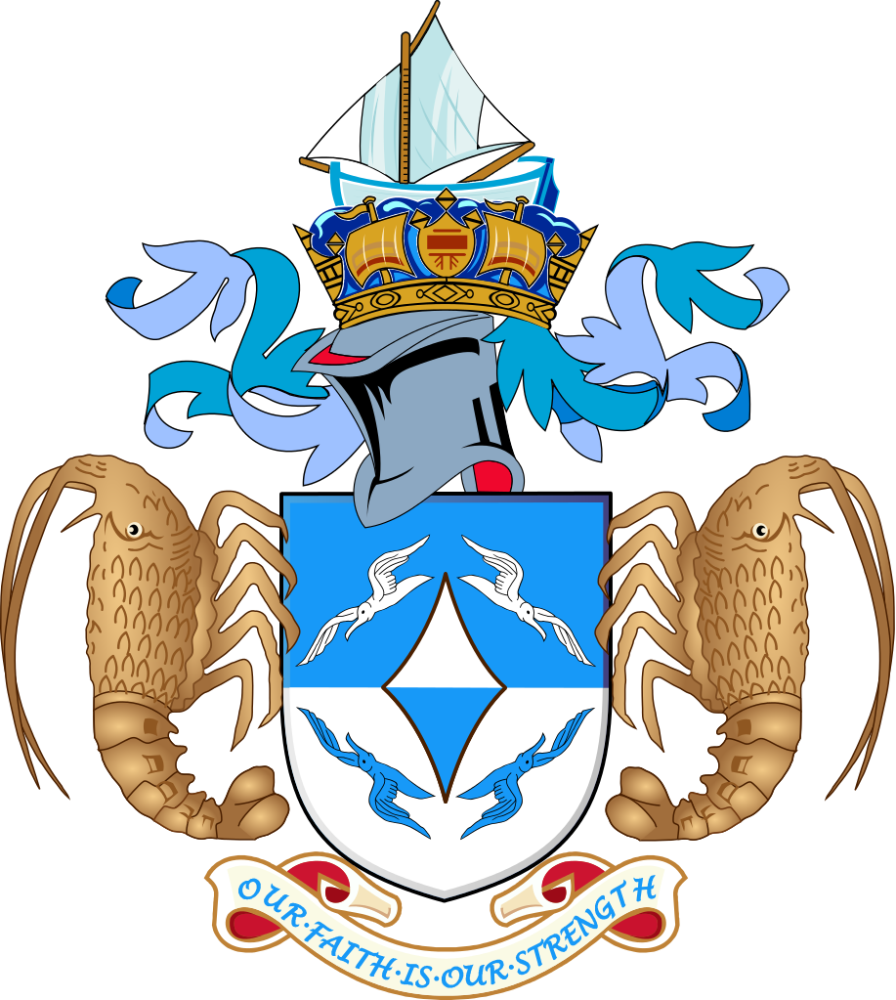

/BOT_Flags/Flag_of_Tristan_da_Cunha.png) 

| Check also: | |
|---|---|
| Saint Helena | Ascension Island |
| Quick Facts on Tristan da Cunha | |
|---|---|
| Capital | Edinburgh of the Seven Seas (the only inhabited area in the territory) |
| Location | South Atlantic Ocean, about 1,510 miles southwest of the island of Saint Helena |
| Overall Land Size | 80 square miles (rough estimate; aside from the main island of 'Tristan da Cunha,' this overall landsize includes the following islands of the archipalego: Inaccessible Island, Nightingale Islands, and Gough Island) |
| Population | 275 (usually between 200+ and 300+ people) |
| Year Established as a British 'crown colony' | 1938 (see 'Preamble - subsection (e)') |
| [Official] Motto | Our faith is our strength |